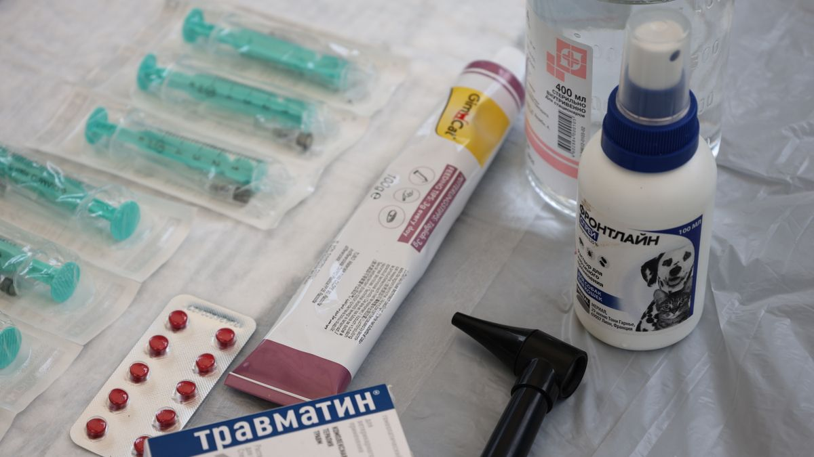
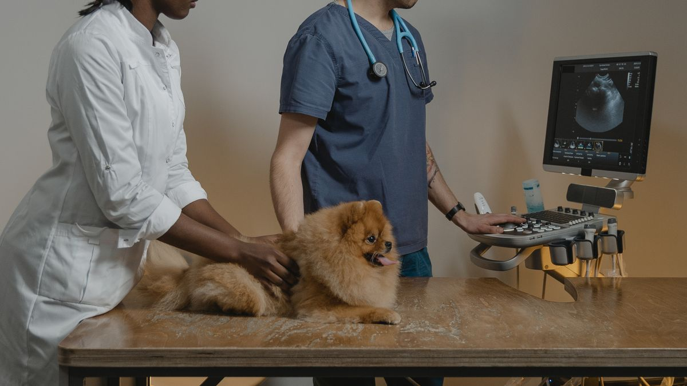

관찰 항목 예시
입문자에게 필요한 5가지: ①식욕(그릇에 남은 %), ②음수(그릇 리필 횟수), ③배변(횟수·형태), ④활동(산책 후 피로 시간), ⑤호흡(평소 대비 헐떡임 여부).

피부·털·눈·코 분비물은 그루밍 때 10초씩 보면 충분합니다. 매일 15분 투자로 80%의 이상 징후를 일찍 잡을 수 있습니다.
기록은 짧게
날짜·항목·변화 정도·지속 일수 4가지만 적습니다. 사진은 같은 창가·같은 거리에서 찍으면 3일 전과 비교가 쉽습니다. 피부 발진·눈곱·체형 변화에 유용합니다.
체중은 2주에 1회, 아침 급여 전 같은 조건에서 재세요. 0.5kg 변화도 소형견에게는 의미 있을 수 있습니다.
병원 방문을 검토할 때
하루 이틀 식욕 20% 감소는 지켜볼 수 있지만, 48시간 이상 50% 미만 섭취·반복 구토(하루 3회)·혈변·호흡 곤란 30분 지속은 일정을 멈추고 동물병원에서 기본 검진을 받아 보세요.

이 글은 상담 시점을 대신 정하지 않습니다. 다만 메모가 있으면 10분 상담이 20분 설명으로 늘어나는 일을 줄입니다.
가족과 신호 공유
'평소와 다르다'는 말을 구체화합니다. 예: '저녁 산책 후 30분 누워 있음(평소 5분)', '물그릇을 하루 1회만 리필(평소 3회)'. 가족 3명이 각자 느낀 변화를 저녁 8시에 1분 공유하면 누락이 줄어듭니다.
실전 적용 노트
관찰은 매일 완벽하게 기록할 필요 없습니다. 아침·저녁 각 5분, 총 하루 10~15분이면 입문자에게 충분한 출발점입니다.
메모 항목은 4~5개로 고정하세요. 식욕, 배변, 수면, 활동량, 눈·코·귀 상태 정도면 패턴 파악에 도움이 됩니다. 항목이 늘면 기록 자체가 부담이 됩니다.
'특이사항 없음'도 기록입니다. 5일 연속 특이사항 없음이면, 6일째 변화가 더 눈에 띕니다.
검색을 1시간 하면 불안만 커지는 경우를 봅니다. 7일 메모 3줄이 검색 10개보다 병원에서 유용했던 사례가 더 많습니다.
가족이 함께 본다면 클립보드나 메모 앱 하나로 통합하세요. 각자 다른 앱에 적으면 비교가 어렵습니다.
급격한 변화(식욕 50% 감소, 배변 2일 없음, 호흡 변화)는 48시간 관찰 후에도 지속되면 검진을 검토하세요.
사진 한 장이 긴 설명보다 나을 때가 있습니다. 피부 발진·눈 상태·변 색은 같은 조명에서 매일 비슷한 각도로 찍어 두면 변화 추적이 쉽습니다.
활동량은 '평소 대비 몇 %'로 적는 습관이 좋습니다. '조금 게으름'보다 '산책 후 20분 눕기, 평소 5분'처럼 구체적일수록 상담이 빨라집니다.
관찰 메모는 비난용이 아닙니다. '오늘 실수했다'가 아니라 '내일 같은 시간에 다시 본다'는 톤으로 쓰면 지속 가능합니다.
이번 주 관찰 체크리스트입니다. 짧게, 같은 항목으로 반복하는 것이 핵심입니다.
- 식욕·배변·수면·활동량을 아침·저녁 중 1회 이상 기록했습니다.
- '특이사항 없음'도 하루 단위로 적었습니다.
- 눈·코·귀·호흡 변화를 5일 이상 비교했습니다.
- 가족 메모를 한 곳(앱·클립보드)으로 통합했습니다.
- 검색 전에 7일 메모 3줄을 먼저 정리했습니다.
- 사진이 필요한 증상은 같은 조명·각도로 1장 이상 남겼습니다.
- 식욕 50% 감소·배변 2일 없음 등 기준에 해당하면 일정을 검토합니다.
- 관찰 시간을 하루 15분 이내로 유지했습니다.
관찰은 진단이 아니라, 병원·상담 때 전달할 근거를 만드는 일에 가깝습니다.
관찰 메모는 완벽한 일지가 아니어도 됩니다. 같은 항목을 7일만 이어 써도, '평소와 다른 날'이 분명해집니다. 가족이 돌보면 기록을 한곳으로 모으고, 검색보다 메모를 먼저 꺼내는 습관이 불안을 줄이는 데 도움이 됩니다. 급격한 변화가 48시간 넘으면 혼자 결론 내리기보다 기록을 들고 상담하세요.
실전 노트는 하루에 전부 적용하기보다, 체크리스트 3개만 골라 2주 반복하는 방식이 오래 갑니다. 잘 되는 항목만 남기고 나머지는 과감히 빼도 괜찮습니다.
마무리로, 이번 주에는 체크리스트 3개만 골라 2주 반복해 보세요. 작은 성공이 쌓이면 나머지는 자연스럽게 늘어납니다.
기록이 쌓이면 병원·상담 때 설명이 쉬워집니다. 한 줄 메모라도 같은 항목으로 이어 쓰는 것이 핵심입니다.
완벽한 루틴보다 80% 지켜지는 루틴이 오래 갑니다. 안 된 날은 원인 한 줄만 적고 다음 주에 조정하세요.
오늘 당장 하나만 고른다면, 체크리스트 맨 위 항목부터 시작해 보세요. 나머지는 다음 주로 미뤄도 괜찮습니다.
가족이 함께 돌본다면, 누가 했는지 체크박스 한 칸만 추가해도 누락·중복이 줄어듭니다.
검색으로 답을 찾기 전에 7일 메모를 먼저 정리해 보세요. 증상 설명이 훨씬 빨라지는 경우가 많습니다.
새 용품·새 사료·새 루틴은 동시에 바꾸지 않습니다. 한 가지만 바꾸고 5일 관찰하는 편이 안전합니다.
정리하며
검색을 1시간 하면 불안만 커지는 경우를 봤습니다. 7일 메모 3줄이 검색 10개보다 병원에서 유용했던 사례가 더 많습니다.
저는 '이상 없음'도 기록이라고 봅니다. 5일 연속 '특이사항 없음'이면, 6일째 변화가 더 눈에 띕니다.
내일 아침 5분만 메모해 보세요. '특이사항 없음'도 기록입니다.
초보자가 자주 실수하는 포인트
- 한 번의 이상 징후에 1시간 이상 검색
- 기록 없이 증상을 기억에만 의존
- 타인 사례와 체중·연령 무시하고 비교
- 체중을 매일 잡아 재어 스트레스 유발
- 가족 간 관찰 내용 공유 안 함
체크리스트
- 관찰 항목 5개 선택
- 카톡 나에게 보내기 메모 습관
- 사진 비교 창가·거리 고정
- 가족 저녁 1분 공유 시간
- 동물병원·응급 연락처 저장
자주 묻는 질문
- 체중은 집에서 꼭 재야 하나요?
- 2주에 1회면 충분합니다. 무리하게 잡아 재기보다 식욕·체형 변화와 함께 보세요.
이 글은 초보자 기준으로 이해하기 쉽게 정리되었으며, 내용은 운영 과정에서 순차적으로 보완될 수 있습니다. 수의사 등 전문가의 진단·처치를 대체하지 않습니다.